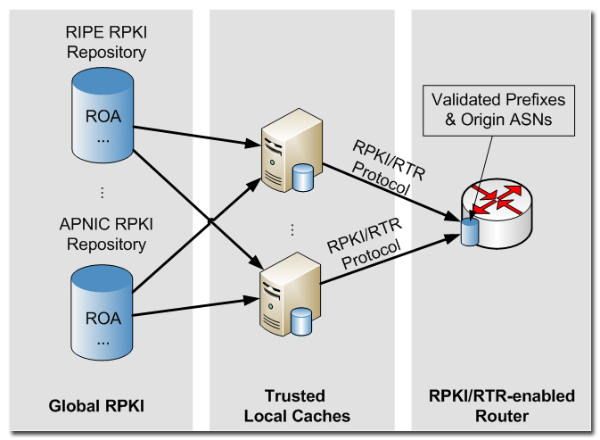

Introduction¶
The RTRlib implements the client-side of the RPKI-RTR protocol (RFC 6810) and BGP Prefix Origin Validation (RFC 6811). The latest release of the RTRlib also supports Internet-Draft draft-ietf-sidr-rpki-rtr-rfc6810-bis, which enables the maintenance of router keys. Router keys are required to deploy BGPSEC.
Background¶
RPKI-enabled routers do not store ROAs itself but only the validated content of these authorities. To achieve high scalability as well as limit resource utilization on BGP routers, the validation of ROAs is performed by trusted RPKI cache servers, which are deployed at the network operator site. The RPKI-RTR protocol defines a standard mechanism to maintain exchange of the prefix origin AS relations between the cache server and routers. In combination with a BGP prefix origin validation scheme a router is able to verify received BGP updates without suffering from cryptographic complexity.
The RTRlib is a lightweight C library that implements the RPKI/RTR protocol for the client end (i.e., routers) and the proposed prefix origin validation scheme. The RTRlib provides functions to establish a connection to a single or multiple trusted caches using TCP or SSH transport connections, and further allows to determine the validation state of a prefix to origin AS relations.
The figure below shows a typical RPKI deployment, where trusted cache server collects ROAs from global RPKI repositories of RIRs, such as RIPE and APNIC. Each local RPKI cache periodically updates and verifies the stored ROAs, and pushes this preprocessed data to connected BGP routers using the RTR protocol.
Further Reading¶
- USENIX CSET13: RTRlib: An Open-Source Library in C for RPKI-based Prefix Origin Validation
- RFC 6480 : An Infrastructure to Support Secure Internet Routing
- RFC 6810 : the RPKI to Router Protocol (RTR)
- RFC 6811 : on BGP Prefix Origin Validation